Fencing is one the oldest skills know to mankind. Literally referring to skills of offence and defence in battle, this skill has evolved throughout the centuries into a sport based on swordplay techniques from the Renaissance and Colonial eras.
Though fencing has its roots in mortal combat, it has evolved into a sport that is regulated to ensure the safety and fairness of each bout.
The techniques necessary to master fencing are vast and can be complicated, but the basic rules of fencing are actually relatively simple. Sparring bouts are typically very short and end when one opponent touches the other with his or her blade in a manner consistent with the fencing style being used. The steps taken to achieve the touch and to avoid being touched are up to the contestants, though certain techniques have proven most useful over the centuries. However, fencing is not an open-ended brawl, and the following restrictions must be observed by all contestants.
Finesse not Strength
Though a vital trait in historic duels, physical strength is less important in modern fencing. Sparring bouts can be ended with a mere touch of the blade, and contestants that regularly use excessive force in their attacks can be disqualified from competitions. Fencing has become battle of wits fought with a blade rather than a contest to injure an opponent. In fact, modern fencing is sometimes referred to as physical chess.
The Fencing Strip
Modern fencing is a linear contest, as all bouts are fought on a narrow strip, and contestants can lose a bout by stepping off of the strip. While more open footwork was an important part of historical fencing, the regulation of the fencing strip allows for a more controlled environment where the focus is on blade control rather than on combat.
Right of Attack
Right of attack is a common restriction in modern fencing. This, means that after a contestant's attack is parried (blocked) or dodged, that contestant cannot make another attack until he has parried or dodged an attack by his opponent. Though this may sound like it results in unentertaining bouts where contestants to "take turns" trying to hit one another, the actually effect is much less noticeable: the principle of right of attack is actually the natural flow of a duel, and it is typically followed even in unregulated bouts. The effective result of this regulation is simply that one contestant cannot beat an opponent into submission through rapid successive attacks.
Touch Regulation
Only touches made by designated parts of the sword are counted in scoring. Typically this means that only touches made by the tip of the blade count, but in Sabre fencing touches by the edge of the blade count as well. Hits by the pommel (base) of the sword never count in scoring and intentional blows by the pommel or hand guard can lead to disqualification.
Target Zones
Finally, in modern fencing, only certain regions of the body are considered viable targets (different styles of fencing have differently defined targets. See below for more details), and touches outside of those accepted regions are ignored in scoring.
Types of Fencing
There are three different styles of classical fencing: Foil, Épée, and Sabre. Though all of them follow the same basic rules of fencing, each has its own distinct focus based on the historical use of each weapon.
Foil
Foil fencing is probably what most people think of when they imagine fencing. This fencing style is the most structured, and many fencing studios begin teaching students foil fencing before progressing to the more complex styles. Foil fencing is based on the historical use of smallswords (a.k.a. court swords) in duels. These duels were typically very structured with rules of honourable dueling, and the swords had very thin blades with only the tips of the swords being sharpened.
Foil fencing uses right of attack, thus preventing one opponent from beating down another with rapid, successive blows. Foil fencing also limits the target area of each opponent to the torso. Furthermore only the tip of the blade is considered capable of delivering an attack, so only thrust touches count in scoring.
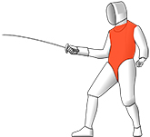
Foil Fencing Target Area
Épée
Épée fencing is based on a slightly older era of fencing, when organized dueling rules were still being developed and sword duels were common. This was the time of rapiers, long, ornate swords whose primary method of attack was thrusting. While foil fencing is considered by many to be the ideal form of combat, épée fencing is considered to be one of the most complex.
The entire body is a valid target in épée fencing, and this style does not use right of attack. This combination can lead to very fast sparring bouts. Though the essence of épée fencing is a more open, fluid style, the basic rules of fencing must still be observed, and only thrust touches count in scoring.
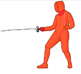
Épée Fencing Target Area
Sabre
Sabre fencing, as its name suggests, is based on the historical use of the saber. Though most commonly remembered for being wielded on horseback, the saber was also used for ground combat. Furthermore, most saber techniques are applicable to any sword of moderately length with a single sharpened edge.
Sabre fencing is the only fencing style that allows cuts (touches by the edge of the blade) to count in scoring. Therefore, sabre bouts are more reminiscent of medieval combat than other fencing styles. However, right of attack is observed in sabre fencing, and only touches that land above the waist are counted. This latter rule is due both to this style's equestrian history and due to the prevalence of cautions against leg attacks in historical fight manuals.
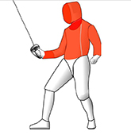
Sabre Fencing Target Area
Introduction to Fencing
Equipment
Throughout the history of fencing protection from the opponent's blade has been important. This protection has evolved from the metal armour and chain mail in medieval times to flowing silk tunics in the Renaissance meant to catch an opponent's blade in its folds, and continues today with fencing uniforms and weapons designed to minimize risk of injury. The result is that, in spite of its brutal beginnings, fencing has become one of the safest sports in existence.
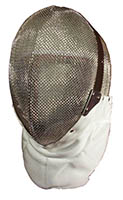
Masks
Though in the Renaissance, bulky helmets were abandoned in favour of greater visibility and mobility, the modern fencing mask has bridged the gap by offering head protection with minimal restrictions. The standard fencing mask consists of a thick wire mesh covering the front of the face, a metal and plastic shell around the sides and top of the head, and cloth and foam padding inside of the mask. The masks also have a bib made of stiff cloth to protect the neck. Because modern fencing requires opponents to always face one another there is no need for protection for the back of the head. The wire mesh offers exceptional visibility and is strong enough that it is impossible for approved fencing blades to bend or puncture it. For advanced fencers that require even greater visibility, Plexiglass mask have also been developed.
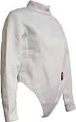
Jackets
Fencing jackets are made of thick cotton or nylon to protect from the impact of the blade while allowing full mobility. (Even in medieval times, thick cloth gambesons were commonly used as protection against swords) The result is protection from scratches or minor cuts that could be inflicted by the flexible blade, though an occasional bruise may occur if a bout gets intense
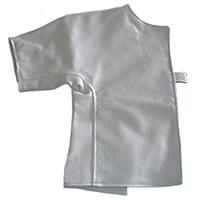
Plastrons
The plastron is an additional cloth piece to protect the underarm of the sword hand, were most touches occur. This extra layer of protection further helps decrease potential bruises.
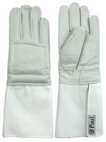
Gloves
The sword hand of a fencer can receive hard knocks from his opponent's blade or, more commonly, his opponent's sword guard. Therefore fencers wear a padded glove on their sword hand which extend a third of the way up there forearm. Gloves are typically not worn on the opposite hand, because proper fencing techniques call for the non-sword hand to be kept out of reach of the opponent's blade anyway. However, some competitors do choose to wear gloves on both hands.
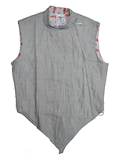
Lamés
Metallic lamés are worn over top of the jacket in foil and sabre fencing to indicate the allowed target area and to make electronic scoring possible.
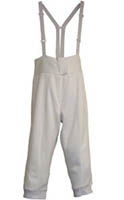
Knickers
Fencing knickers are made of cotton or nylon like the jackets and are worn over top of the fencer's street clothes. However, since the legs are typically not a target in fencing, fencing knickers are not as thick as the jackets, being primarily used to provide a consistent look to the uniform.
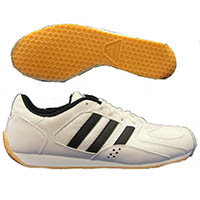
Shoes
Fencing shoes are essentially sneakers with a flat heel to allow for easier lunges and faster movement. However, they are not necessary for casual bouts; standard sneakers or running shoes are sufficient.
Swords
Modern fencing blades have come a long way from the swords of old. Though still made of high carbon steel like their predecessors, they are blunted, very light, and forged to be highly flexible. The result is a blade that is more comparable to a thick car antenna than to traditional sword. Additionally, in foil and épée fencing, where the tip of the blade is the only part used for touches, the hand grip has been redesigned to allow for a more ergonomic thrust. This redesigned grip is called the pistol grip. However, some fencers prefer the traditional French grip. Modern fencing swords do retain the pragmatic inclusion of a handguard, different for each of the types of sword used in fencing.
Foil
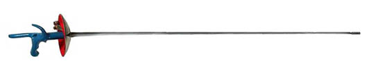
The fencing foil is based on the historical courtsword or smallsword. Used primarally as a clothing assecory for men in the late Renassiance into the colonial period, the smallsword was exceptionally quick, and could still be a lethal weapon in self defence or in duels. The modern foil retains the small disk handguard meant to deflect thrusts directly in front of the hand.
Épée
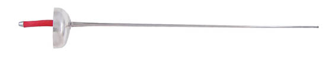
The épée is based on the rapier of the Renaissance. This was the weapon of Romeo and Tybalt, Cyrano de Bergerac, and the Three Musketeers. Used almost exclusively in duels, rapiers were much more ornate that their heavy predecessors. However, one of the most common rapier styles was the Spanish hilt rapier with a bell shaped guard meant to protect the whole hand. This is the handguard style that has evolved into the épée.
Sabre
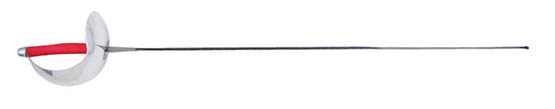
Curved swords used on horseback were used for centuries by many different cultures. However, the modern fencing sabre is based on the sabres used during the colonial period. Though they do not have a curved blade like their predecessors, the do retain the unique handguard shape.